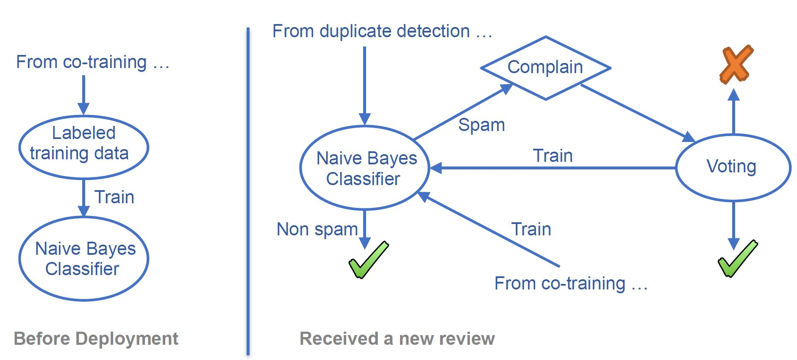
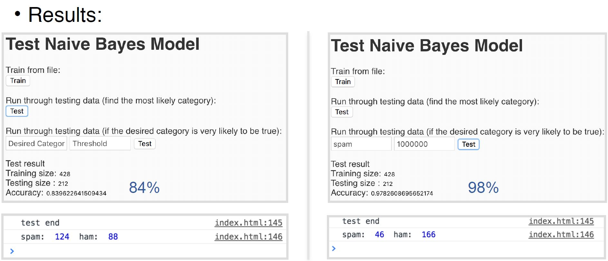

Built an a voting platform where a user can setup a poll and invite other users to vote.
A user starts a poll by inviting voters and sending them Votetokens, which carries the details of the vote, and an expire time set by the host. The voters can vote before the deadline. To vote, the voter then send the Votetoken back along with his answer.
When users vote, the answers are encrypted using RSA method. The secret key of this poll will be revealed once the poll ends, so the peers on the network can conclude the result.
Worked in a team of three, developed a spam detection feature for decentralized reviewing platform. Did the naive bayes classifier part and integrated the decentralized voting into the solution.
When a review is submitted, it will be checked by duplicate detection and classification algorithms. If a review is identified as spam, the reviewer can ask the system to re-evaluate his review by real humans. The result of the vote by real users will be final and will subsequently be used as training data to improve the accuracy of our algorithm.
For the classification part. Ideally we want a selection of algorithms to run in parallel and vote for the result, with the hope of getting a more accurate result than any single one of them. For now, we’ve implemented naive bayes for the classification part for its simplicity and the relative accuracy to its runtime.
Naive Bayes DemoWe will classify a review as spam if it is many times more likely to be spam then non-spam given a set of features, assuming they are conditionally independent. Here instead of selecting the most likely category calculated by naive bayes, we provide a desired-category and threshold. Threshold filters out less confident predictions by the classifier.
In a decentralized application(DApp), the users are responsible for keeping exclusive control of their key. Having no trusted central management mechanism, there is nothing the decentralized system can do once the key is lost. We propose a method to enable to enable retrieval of lost account in DApps by enforcing an arbitration process governed by majority opinion of the users
Our methodology involves a voting system to act as the authority to judge whether a user is the truthful owner of the original account. To recover a lost account, the user would set up a new account and claim the ownership of another account by providing evidence that proves their ownership of the lost account. The privacy sensitive evidence provided has a version for each voter encrypted with the voter’s public key. The set of all previous transaction partners, who are supposed to know the information provided, will act as the voting group to verify the evidence. If the transaction partners vote in favor of the request, the lost account will be recovered and restored for the user who submitted the request.